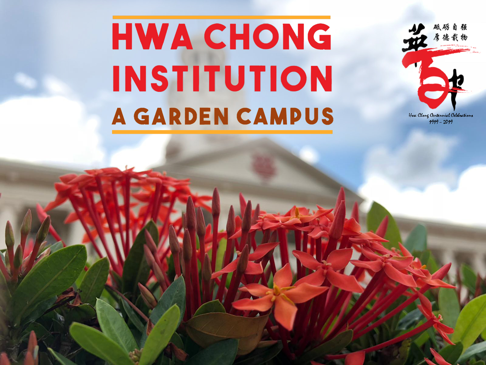

A Garden Campus
In celebration of
Hwa Chong's 100th Anniversary
Welcome to Hwa Chong's very own nature walking trail app!
Explore the extensive flora and fauna of our garden campus with interactive maps and bite-sized writeups.
Introduction to Nature in
Hwa Chong
海天辽阔 云树苍龙
中有我华中
Hwa Chong is blessed with a beautiful campus, with a plethora of flora and fauna. The tall trees and extensive bushes stand as testament to many years of cultivation, reflecting the school's long-standing dedication as a premier institution that grooms generations of leaders in research, industry and government.
Amongst the historic buildings and the state-of-the-art facilities stand many thoughtfully arranged trees, shrubs and bushes, all of which contribute to the beauty of our campus. The trees lining the top of the terraces provide shade after sports training, while some plants specimens used for dissections in biology classes are grown in-house.
Moreover, it is fortunate that Singapore is situated along the East Asian-Australasian Migratory flyway, acting as an important stopover point for birds. Thus, one can see many species of birds hidden among the trees.
With the flora and fauna closely complementing one another, the school has successfully shaped itself into a garden campus, attracting birds, butterflies and other forms of wildlife to flourish among us.
饮水思源 厚德载物
The flora in our school is also a reflection of the school's emphasis its Chinese values. Many of the school's trees and plants were donated by the school alumni - a strong testimony of the value of 饮水思源.
It is only with the devotion and dedication of generations of members of the Hwa Chong family that we are able to experience the exquisite garden campus today.
This year, we are pleased to document and share the rich biodiversity of the school with everyone else. We present a specially curated list of flora and fauna, accompanied by a beautiful compendium of photos in an application and website. Do spare some time and allow yourself to be enthralled by the beauty of our school, our second home.
No search results
Locations:
This page is dedicated for all alumni whom may be interested in the brief history of flora in Hwa Chong. Are you able to guess which years were these photos taken?
Message from the HC Garden Committee
'If you truly love Nature, you will find beauty everywhere.' - Vincent van Gogh
As a group of nature lovers in Hwa Chong, we set out to discover the legacy of beauty in the greenery of our garden campus. Identifying the plethora of flora and fauna seemed daunting at first, but we ended up deeply enthralled by the boundless biodiversity in our school and the rich history behind it.
We were also amazed by the amount of devotion behind the landscape of Hwa Chong - some plants are donations from alumni, while others are selections by teachers for biology class. The healthy ecosystem created by the artfully designed green spaces allowed a great variety of birds and insects to thrive on campus, bringing us closer to nature.
Indeed, the excitement of identifying species and learning about the intriguing characteristics of each of them drove us to become more curious and observant each time we wander around in school. Every time we pause and marvel at the plants around us, we become more determined to inspire our friends to appreciate the beauty around us. With our website and mobile app that present selected flora and fauna on campus, we hope that you would also take time to wander, and pay attention to the hidden gems on our garden campus.
"If I have seen further, it is by standing on the shoulders of giants." - Sir Isaac Newton
This project would certainly not have been possible without the generous assistance of many of our Hwa Chong teachers, alumni and students.
We would like to express our heartfelt appreciation and sincere gratitude to our Principal Mr. Pang Choon How and Deputy Principals for their support; in particular, Deputy Principal/Special Projects, Mr. Tan Pheng Tiong for sharing with us more about Hwa Chong's rich history and landscaping, as well as the historical photographs of the school; Dean of Research Studies, Dr. Chia Hui Ping, for sharing her expertise and knowledge in Botany with us; Dr. Lim Jit Ning, for his endless encouragement; Dr. Adeline Chia, for her guidance and mentorship throughout this entire journey; Dr. Sandra Tan, for her invaluable recommendations and assistance in the publicity of the project, as well as vetting of write-ups; Mr. Tang Koon Loon and Mr. Lau Soo Yen, for sharing their passion for birds and vivid photographs of fauna in the school with us; Mr. Mark Tan, for his innovative suggestions, comprehensive proofreading of the write-ups, and training us as trail guides; together with Ms. Tan Wei Qian, for her constructive suggestions concerning the write-ups.
We would also like to extend our gratitude to school alumni who have contributed to our school landscape. In particular to Mr. Mak Chin On, for the contributions of fauna that he has made over the past few decades, and for sharing his wealth of knowledge on the great variety of trees in the school with us.
The estate staff and school gardeners are our unsung heroes - working tirelessly over many years to shape the landscape in school, amd making it the thriving Garden Campus it is today.
Last but not least, we would like thank the school for providing us with the opportunity to work on this very meaningful project. This journey has taught us to appreciate Hwa Chong from a different perspective, and proves that this hundred year-old campus still has many surprises waiting to be uncovered.
This work is dedicated to all the giants in our lives.
Biodiversity Trails Student Committee
Members of the student committee who have made contributions, in one way or another, to various aspects of the project are listed below
Photography
Amanda Koh Kai Yen
Winnie Lim Wen Ying
Faith Teo Kai En
Cheong Huey Yew
Jenny Ma Junyi
Write-ups for Flora
Hu Yi
Sin Wei Chuen
Li Tanfei
Li Ming Jun
Sae Xilong
Cheong Huey Yew
Jenny Ma Junyi
Ong Wei Jun
Write-ups for Fauna
Fan Xilin
Shan Yunhong
Website Design
Faith Teo Kai En
Winnie Lim Wen Ying
Amanda Koh Kai Yen
App Development
Lye Wen Jun
Leonard Ong Rui Fu
We would also like to acknowledge the key following sources of information for our writeups. We declare that no photographs from these sources have been used by us.
Chin, Jacqueline, and John Chin. John&Jacq's Garden. 2011. Accessed 2019. https://www.jaycjayc.com/.
Fern, Ken et al. "Useful Tropical Plants." Useful Tropical Plants. Accessed 2019. http://tropical.theferns.info/.
Flowers of India. Accessed 2019. http://www.flowersofindia.net/.
Master Gardener Program. 2019. Accessed 2019. https://wimastergardener.org/.
Missouri Botanical Garden. Accessed 2019. http://www.missouribotanicalgarden.org/.
Mound, Laurence A, Dom W Collins and Anne Hastings. Thysanoptera Britannica et Hibernica - Thrips of the British Isles. Lucidcentral.org, Identic Pty Ltd, Queensland, Australia. 2018. Accessed 2019. https://keys.lucidcentral.org
National Center for Biotechnology Information (NCBI). Accessed 2019. https://www.ncbi.nlm.nih.gov/.
National Library Board Singapore. eResources. 2019. Accessed 2019. http://eresources.nlb.gov.sg/.
National Parks Board (NParks). Accessed 2019. https://www.nparks.gov.sg/.
Plants For A Future. 2012. Accessed 2019. https://pfaf.org/user/Default.aspx.
Slik, Ferry et al. Plants of Southeast Asia. 2009. Accessed 2019. http://www.asianplant.net/.
Stuart, Godofredo U. StuartXchange. 2018. Accessed 2019. http://www.stuartxchange.org/.
Wikipedia. Accessed 2019. https://en.wikipedia.org/.